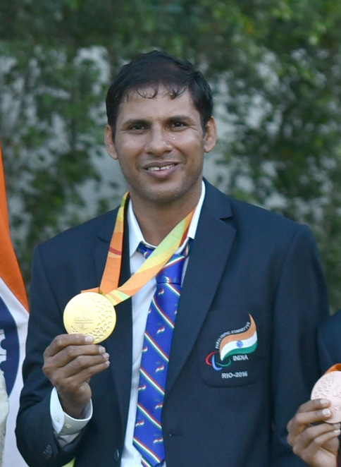
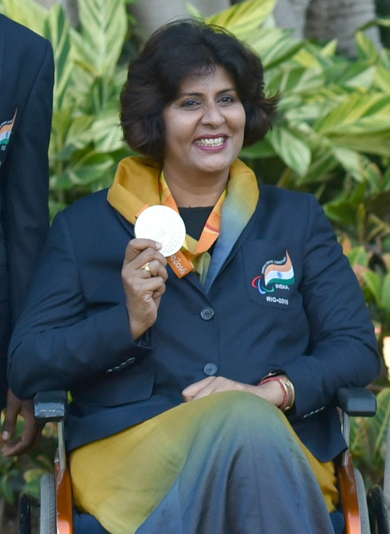
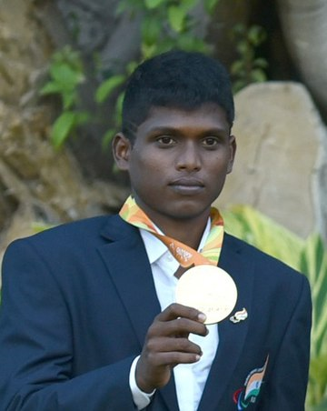

INDIANS AT THE PARALYMPICS
INDIANS AT THE PARALYMPICS
- DEVENDRA JHAJARIA

★Devendra Jhajharia, born 10 June 1981, is an Indian
Paralympic javelin thrower competing in F46 events. At the age of eight, climbing a
tree he touched a live electric cable. He received medical attention but
the doctors were forced to amputate his left hand.
★He won his 1st gold in the javelin throw at the 2004 Summer Paralympics
in Athens, becoming the second gold medalist at the Paralympics for his
country. At the 2016 Summer Paralympics in Rio de Janeiro, he won a
2nd gold medal in the same event, bettering his previous record.
Devendra is currently being supported by the Olympic Gold Quest.
He becomes India's most decorated Paralympic player by winning his
3rd medal, a silver at the 2020 Summer Paralympics at Tokyo.
★He is a recipient of prestigious awards like the Padmashri and Arjuna award.
- DEEPA MALIK

★Deepa Malik, born in 30 September 1970, is an Indian athlete.
She had to undergo a surgery, to remove a tumour in the spinal cord,
which was potentially life-threatening, she is paralysed waist down and uses
a wheelchair.
★Deepa Malik is the first Indian woman to win a medal at the Paralympics.
She won the silver medal in the shot put in 2016 Paralympic Games.
★She was previously honored with the Arjuna award in 2012, at the age of
42 years. She has also been conferred the prestigious Padma Shri award
in 2017. She created a New Asian Record in Asian Para Games 2018 and is the
only Indian woman to win medals in 3 consecutive Asian Para Games (2010,
2014, 2018). She has won 58 national & 23 International medals across
all disciplines to date.
- MARIYAPPAN THANGAVELU

★Mariyappan Thangavelu, born 28 June 1995, is an Indian
Paralympic high jumper. He suffered permanent disability in his right leg
after it was crushed under a bus when he was only five years old.
★He represented India in the 2016 Summer Paralympics games held in Rio de
Janeiro in the men's high jump T-42 category and the 2020 Summer Paralympic
games held in Tokyo in the men's high jump T-63 category , winning the gold
medal and silver medal respectively in the finals.
He is India's first Paralympian gold medalist since 2004.
★On 25 January 2017, Government of India conferred him with the Padma Shri
award for his contribution towards sports and in the same year he was
also awarded Arjuna Award. He was awarded with Major Dhyan Chand
Khel Ratna in the year 2020 by Government of India.
WHY PARALYMPICS?
☆THE PURPOSE OF PARALYMPICS☆
To promote and contribute to the development of sport opportunities
and competitions, from the start to elite level. To
develop opportunities for athletes with a severe
disability in sport at all levels and in all
structures.
THANK YOU!
Click here to go back to pg1!